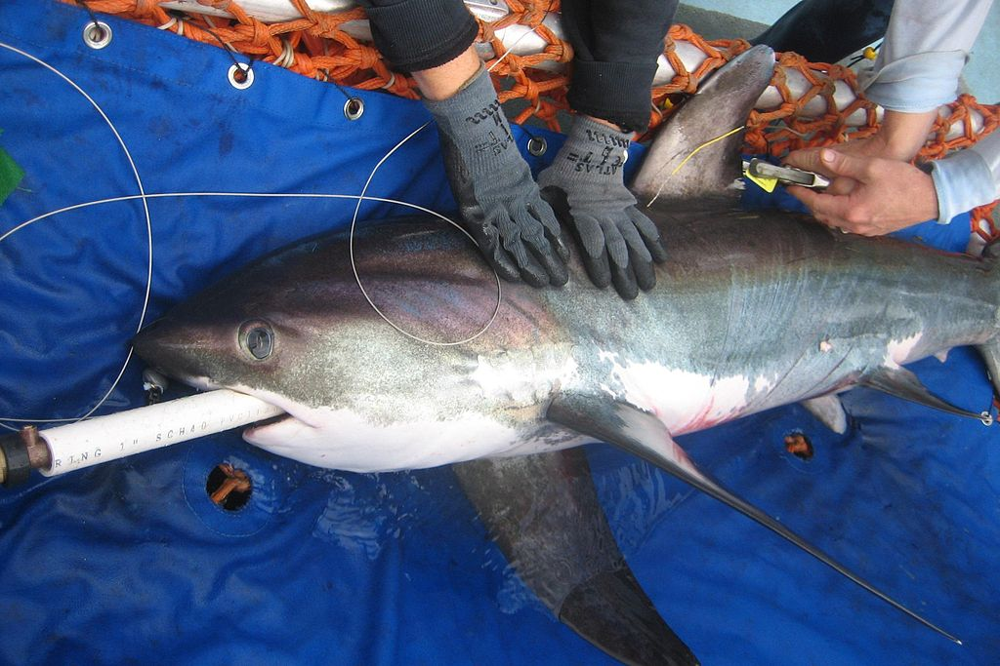
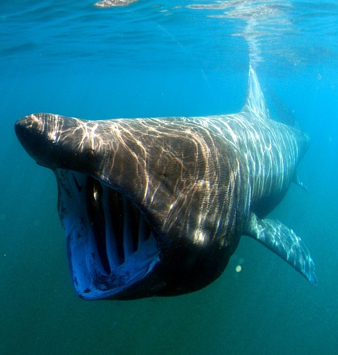
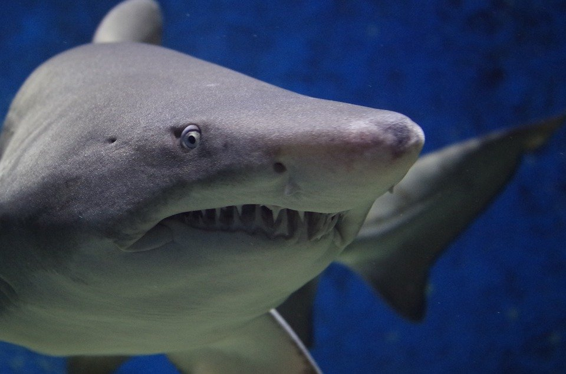
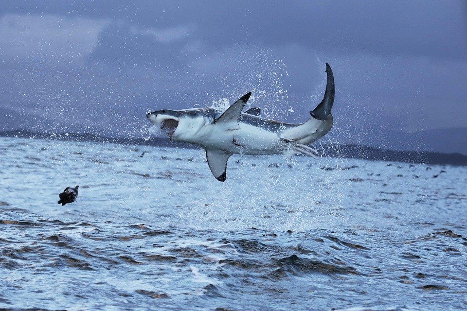
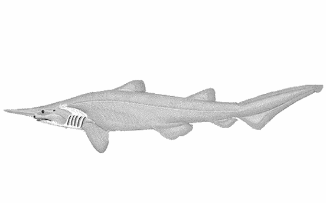

VOLVER
ORDEN
LAMNIFORMES
mako
isurus oxyrinchus

De unos 4 metros de media , se encuentra en casi todos los mares y en peligro de extinción por la sobrepesca. El más rapido de el oceano , no solo de todos los tiburones , si no de todos los animales marinos.Y de los primeros del mundo en todo habitat. Su cuerpo en forma de misil esta diseñado para alcanzar mas de 100km por hora. El título de pez más rápido del oceano lo ostentaba el pez vela pero , se ha descubierto que los makos dan caza a los peces vela. Se han grabado desde embarcación arrastrando señuelos , seguir a embarcaciones que superan esta velocidad. También es considerado uno de los tiburones más inteligentes , junto con su primo el tiburón blanco y otro familiar , el cailón salmonero.Lo que diferencia a estas espécies de el resto es que son de sangre caliente , tienen un sistema termico que permite un gran flujo de sangre caliente al cerebro.Es así como funciona el cerebro de los mamiferos. De hecho se ha constatado comportamientos complejos , incluso reconocer a personas que les dan de comer.Es considerado peligroso, muy territorial, han llegado a atacar a personas. Aunque en otros estudios han tolerado interacciones con humanos, una vez ellos se sienten fuera de peligro .Ataca a embarcaciones asestandoles cabezazos .Saben reconocer a personas , una vez se sienten seguros se dejan tocar , alimentar y saben diferenciar un persona de otra. Está en peligro de extinción por su sobrepesca. Es un pez pelágico por lo que rara vez se acerca a la costa .
tiburón azotador
alopias vulpinus

Tambíén conocido como pez zorro , o tiburón zorro.Su cola mide prácticamente como el resto del cuerpo . Se alimenta en solitario o en grupo .Con su grán cola azota el agua en forma de látigo , con ello deja aturdidos a pequeños peces, o los mata directamente para alimentarse.A veces derriba también aves cuando pasan volando bajo con su larga cola.No es peligroso para el ser humano.Se encuentra en casi todos los mares del mundo a excepción de los polos.
tiburón peregrino
cetorhinus maximus

Tiburón de gran tamaño , que puede llegar a medir más de 12m. Es el pez más grande del oceano ,después del tiburón ballena. Es totalmente inofensivo , de hecho se hacen safaris para nadar junto a él. Se alimenta únicamente de placton que filtra abriendo su gran boca. Es fácil verlo cerca de la costa. Hace poco un turista lo confundió con un tiburón blanco y se tiró del barco para jugar con él , que sorpresa cuando vió que se habia confundido de éspecie .El video se hizo viral enseguida.
tiburón toro
carcharias taurus

Tiene diversos nombres, damisela,toro,enfermera gris,arenero, no hay que confundirlo con el otro tiburón toro , carcharhinus leucas. Al otro se le conoce por tiburón toro o sardá , y este es toro bacota. Suele estar en los fondos hasta los 200 m por norma general, aunque puede verse nadando activo, sobretodo cuando se alimenta. Habita en Atlántico, Pacífico , Índico , Mediterraneo y Mar Rojo.Solo ha habido unos pocos casos de ataques , al alimentarlos normalmente ,són dóciles . Suelen ser exhibidos en acuarios de todo el mundo.
tiburón blanco
carcharodon carcharias

Vive en las aguas cálidas y templadas de casi todos los oceanos . Esta especie es la única del género Carcharodon que sobrevive en la actualidad .Esta en situación de vulnerabilidad. Su nombre viene de su coloración blanca por la parte inferior.Dientes aserrados , de gran tamaño para cortar grandes porciones de carne. Los más grandes suelen rondar los 6 metros. Se han contado histórias de tiburones de 9 metros pero se han desmentido después cuando han analizado la dentadura. Hacen grandes migraciones , sin que la ciencia haya podido dar una explicaciòn convincente. Tan largas como de la costa de sudáfrica a Australia.Cazán emboscando a sus presas , lanzando un potente ataque desde abajo, lo que les lleva a veces a saltar varios metros sobre el nivel de la superficie.En el mediterraneo, esperan los pasos de atunes, peces espada y cerca de las almadrabas .En otras zonas, focas , tortugas marinas ,cetaceos, calderones.Sus enemigos son las Orcas, que atacan a ejemplares jovenes, pero no a los adultos .También los tiburones , tigre, toro y cocodrilos marinos de la costa Australiana pueden atacar a ejemplares jovenes. A pesar de su gran mala fama , estos tiburones , no ocasionan apenas alguna muerte que otra al año y solo en zonas donde compiten con el alimento y la mayoria por confusión, el número es ridiculo comparado con los ataques de hipópotamo , el que más muertes causa con diferencia al año.
tiburón duende rosado
mitsukurina owstoni
Derechos de atribución de fotografías
author-page-licence
Wikimedia Commons
Wikipedia
CC BY-SA 3.0

Uno de los tiburones más extraños que han existido. Con una boca extensible que se proyecta hacia adelante.Miden entre 3 y 6 metros Vive en aguas muy profundas , alrededor de los 1500 metros .Índico ,Pacífico y Atlántico son sus habitats. No se sabe mucho sobre este tiburón , por la dificultad que entraña estudio.
VOLVER